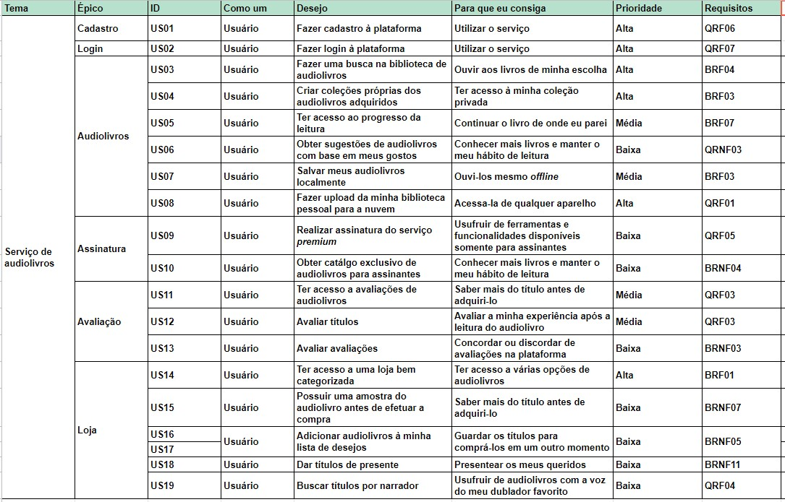

Backlog do Produto
Versionamento
| Versão | Data | Modificação | Autor |
|---|---|---|---|
| 1.0 | 21/10/2019 | Adição do Backlog | André Goretti, Marco Antonio e João Gabriel |
Introdução
Em termos gerais, o Product BackLog é uma listagem de todos os afazeres pendentes no projeto. Ele substitui o modelo tradicional de especificação de artefatos. Cada elemento da listagem é elicitado por meio de interação da equipe de desenvolvimento com o Cliente - podendo ser apenas um representante, o que torna os elementos levantados muito arbitrários; ou podendo ser uma equipe representante do Cliente, representando as diversas áreas que utilizarão o produto.
Backlog

EP01: Cadastro
US01: Fazer cadastro à plataforma
Eu, como um usuário, desejo fazer cadastro à plataforma para que eu consiga utilizar o serviço.
Critérios de aceitação
EP02: Login
US02: Fazer login à plataforma
Eu, como um usuário, desejo fazer login à plataforma para que eu consiga utilizar o serviço.
Critérios de aceitação
EP03: Audiolivros
US03: Fazer uma busca na biblioteca de audiolivros
Eu, como um usuário, desejo fazer uma busca na biblioteca de audiolivros para que eu consiga ouvir aos livros de minha escolha.
Critérios de aceitação
US04: Criar coleções próprias dos audiolivros adquiridos
Eu, como um usuário, desejo criar coleções próprias dos audiolivros adquiridos para que eu consiga ter acesso à minha coleção privada.
Critérios de aceitação
US05: Ter acesso ao progresso da leitura
Eu, como um usuário, desejo ter acesso ao progresso da leitura para que eu consiga continuar o livro de onde eu parei.
Critérios de aceitação
US06: Obter sugestões de audiolivros com base em meus gostos
Eu, como um usuário, desejo obter sugestões de audiolivros com base em meus gostos para que eu consiga conhecer mais livros e manter o meu hábito de leitura.
Critérios de aceitação
US07: Salvar meus audiolivros localmente
Eu, como um usuário, desejo salvar meus audiolivros localmente para que eu consiga ouvi-los mesmo offline.
Critérios de aceitação
US08: Fazer upload da minha biblioteca pessoal para a nuvem
Eu, como um usuário, desejo fazer upload da minha biblioteca pessoal para a nuvem para que eu consiga acessa-la de qualquer aparelho.
Critérios de aceitação
EP04: Assinatura
US09: Realizar assinatura do serviço premium
Eu, como um usuário, desejo realizar assinatura do serviço premium para que eu consiga usufruir de ferramentas e funcionalidades disponíveis somente para assinantes.
Critérios de aceitação
US10: Obter catálogo exclusivo de audiolivros para assinantes
Eu, como um usuário, desejo obter catálogo exclusivo de audiolivros para assinantes para que eu consiga conhecer mais livros e manter o meu hábito de leitura.
Critérios de aceitação
EP05: Avaliação
US011: Ter acesso a avaliações de audiolivros
Eu, como um usuário, desejo ter acesso a avaliações de audiolivros para que eu consiga saber mais do título antes de adquiri-lo.
Critérios de aceitação
US012: Avaliar títulos
Eu, como um usuário, desejo avaliar títulos para que eu consiga avaliar a minha experiência após a leitura do audiolivro.
Critérios de aceitação
US013: Avaliar avaliações
Eu, como um usuário, desejo avaliar avaliações para que eu consiga concordar ou discordar de avaliações na plataforma.
Critérios de aceitação
EP06: Loja
US014: Ter acesso a uma loja bem categorizada
Eu, como um usuário, desejo ter acesso a uma loja bem categorizada para que eu consiga ter acesso a várias opções de audiolivros.
Critérios de aceitação
US015: Possuir uma amostra do audiolivro antes de efetuar a compra
Eu, como um usuário, desejo possuir uma amostra do audiolivro antes de efetuar a compra para que eu consiga saber mais do título antes de adquiri-lo.
Critérios de aceitação
US016: Adicionar audiolivros à minha lista de desejos
Eu, como um usuário, desejo adicionar audiolivros à minha lista de desejos para que eu consiga guardar os títulos para comprá-los em um outro momento.
Critérios de aceitação
US017: Adicionar audiolivros à minha lista de desejos
Eu, como um usuário, desejo adicionar audiolivros à minha lista de desejos para que eu consiga guardar os títulos para comprá-los em um outro momento.
Critérios de aceitação
US018: Dar títulos de presente
Eu, como um usuário, desejo dar títulos de presente para que eu consiga presentear os meus queridos.
Critérios de aceitação
US019: Buscar títulos por narrador
Eu, como um usuário, desejo buscar títulos por narrador para que eu consiga usufruir de audiolivros com a voz do meu dublador favorito.